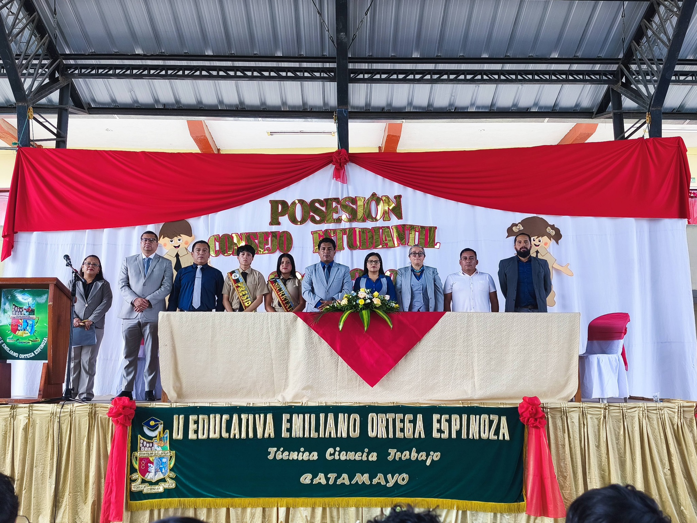

El Colegio de Bachillerato Emiliano Ortega Espinoza proyecta consolidarse como una institución de excelencia educativa, reconocida por la calidad de sus procesos de gestión académica y administrativa, así como por la implementación de prácticas institucionales eficientes e innovadoras que orienten, apoyen y monitoreen de manera permanente el accionar de todos los actores de la comunidad educativa.
La institución fundamenta su desarrollo en principios humanísticos y emprendedores, promoviendo una formación integral que fortalezca el compromiso ético, social y ciudadano de sus estudiantes. Asimismo, impulsa el trabajo colaborativo, la mejora continua y el uso responsable de los recursos pedagógicos y tecnológicos, con el propósito de garantizar aprendizajes significativos y pertinentes.
El Colegio de Bachillerato Emiliano Ortega Espinoza aspira a contribuir activamente a la construcción de una sociedad justa, solidaria y participativa, acorde a las aspiraciones de la ciudad de Catamayo, formando ciudadanos críticos, responsables y comprometidos con el desarrollo sostenible y el bienestar de su comunidad.